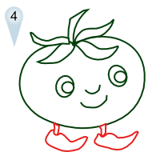

THE TOMATO BOYS
 Home About ContactPLUM TOMATO
Description
A plum tomato, also known as a processing tomato or paste tomato, is a type of tomato bred for sauce and packing purposes. They are generally oval or cylindrical in shape, with significantly fewer locules (seed compartments) than standard round tomatoes (usually only two) and a generally higher solid content, making them more suitable for processing. Plum tomatoes are also sometimes favored by cooks for use during the tomato off-season, as they are generally considered more amenable to handling and are therefore available in a state closer to ripe than other supermarket tomatoes.
Varieties commonly available in markets include Roma VF and San Marzano (semi-determinate; a signature tomato of Italian cuisine[1]), though there are many other varieties, such as the short-season Ropreco Paste and the larger Amish Paste and Big Mama. Five hybrid cultivars grown in California constitute over 60% of total production of processing tomatoes. Small plum tomatoes (similar in size to cherry tomatoes) are known as grape tomatoes.
Botany
While Roma is an open-pollinated variety rather than a hybrid, it has been steadily improved to the point where most Roma tomato vines are verticillium and fusarium wilt resistant (thus the VF in the name).
Roma tomatoes are egg or pear-shaped and red when fully ripe. They have few seeds and are a good canning and sauce tomato. While Roma is an open-pollinated variety, in general it is not considered an heirloom tomato. Maturing in under three months, the plant itself grows to 1 meter (36 inches) in height and the single fruit weighs about 57 grams (2 oz).[4] The vines fruit heavily, making Roma a popular variety with gardeners who do a lot of home canning.
Scientific Classification
Kingdom: Plantae
(unranked): Angiosperms
(unranked): Eudicots
(unranked): Asterids
Order: Solanales
Family: Solanaceae
Genus: Solanum
Species: S. lycopersicum